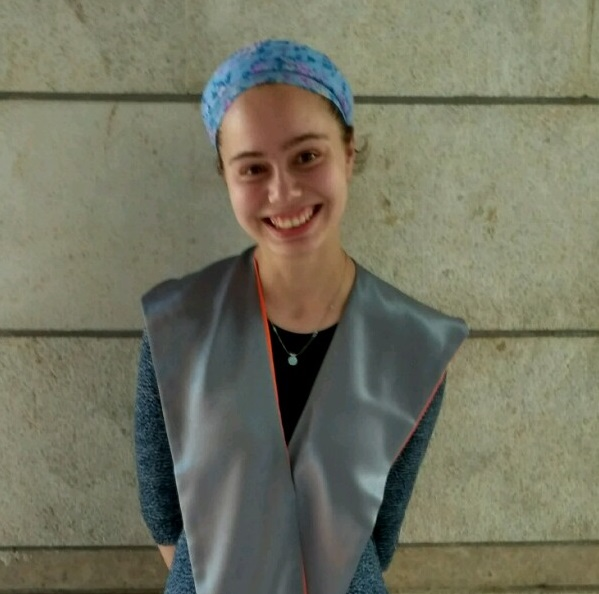

Tamar Bar-On

PhD,
Department of Mathematics,
Bar-Ilan University.
E-mail: tamarnachshoni at gmail.com
Research interests
Profinite groups
Central simple algebras
Publication
Tamar Bar-On,
The weight of non-strongly complete profinite groups
, submitted.
Tamar Bar-On,
The tower of profinite completions
,
Journal of Group Theory
21
(2018), 1065-1072.